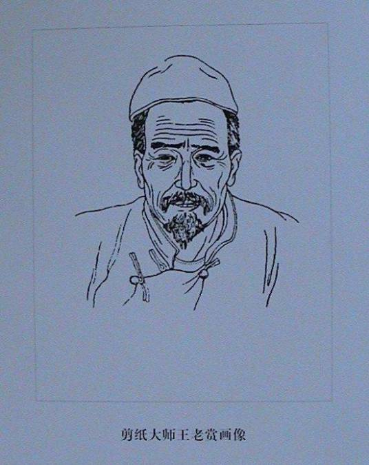

人物简介
王老赏生活在河北蔚县，一个以戏曲和剪纸闻名的小城。他把戏台上的生旦净末丑搬进了红纸里——武将的铠甲、旦角的水袖、丑角的鬼脸，都在剪刀下活了起来。
蔚县剪纸最特别的是"点彩"：剪好后不是单色，而是用白酒调了品色，用毛笔在镂空处点染。王老赏让这种"剪染结合"的技法成为蔚县的标志，也让北方剪纸多了一种浓艳的可能性。
纸艺大师
河北蔚县剪纸的重要代表人物之一。他所推动的点彩与阴刻语言，使蔚县剪纸形成鲜明的地域辨识度与戏曲化装饰风格。

王老赏生活在河北蔚县，一个以戏曲和剪纸闻名的小城。他把戏台上的生旦净末丑搬进了红纸里——武将的铠甲、旦角的水袖、丑角的鬼脸，都在剪刀下活了起来。
蔚县剪纸最特别的是"点彩"：剪好后不是单色，而是用白酒调了品色，用毛笔在镂空处点染。王老赏让这种"剪染结合"的技法成为蔚县的标志，也让北方剪纸多了一种浓艳的可能性。
蔚县剪纸的最大特色是"阴刻为主、阳刻为辅、重彩点染"。王老赏的刀口利落，人物的衣纹、脸谱、兵器都刻画得一丝不苟；点染时他又大胆用对比色，红脸配绿袍、金甲配紫云，热闹得像戏台本身。
他让蔚县剪纸从窗花走向了画框。在他之前，蔚县剪纸是过年时贴在窗上的喜庆点缀；在他之后，它成了可以被装裱、被收藏、被研究的独立艺术品。